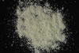

|
DOCUMENTATION_FORMAT: MINERAL
SAMPLE_ID: BR93-33a
MINERAL_TYPE: Sorosilicate
MINERAL: Epidote (Epidote group)
FORMULA: Epidote = Ca2(Al,Fe+3)3(SiO4)3(OH)
FORMULA_HTML: Ca2(Al,Fe+3)3(SiO4)3(OH)
COLLECTION_LOCALITY: Southern part of the Rodman Mountains (near Radio Tower), Barstow, CA, USA
COLLECTION_LATITUDE: Not Available # degrees and decimal minutes (N or S)
COLLECTION_LONGITUDE: Not Available # degrees and decimal minutes (W or E)
DATUM: Not Available # coordinate datum
ORIGINAL_DONOR: Eric Livo
CURRENT_SAMPLE_LOCATION: USGS Denver Spectroscopy Laboratory
ULTIMATE_SAMPLE_LOCATION: USGS Denver Spectroscopy Laboratory
SAMPLE_DESCRIPTION:
Epidote veinlets in biotite quartz monzonite rock.
IMAGE_OF_SAMPLE:

END_SAMPLE_DESCRIPTION.
XRD_ANALYSIS:
Major: Epidote, Albite, and Quartz
Minor: none
END_XRD_ANALYSIS.
COMPOSITIONAL_ANALYSIS_TYPE: None # XRF, EPMA, ICP(Trace),WChem
COMPOSITION_TRACE: None
COMPOSITION_DISCUSSION:
No additional compositional details available.
END_COMPOSITION_DISCUSSION.
MICROSCOPIC_EXAMINATION:
END_MICROSCOPIC_EXAMINATION.
IMAGE_OF_SAMPLE: Not Available
SPECTROSCOPIC_DISCUSSION:
well formed Epidote spectrum (spectrally pure)
END_SPECTROSCOPIC_DISCUSSION.
SPECTRAL_PURITY: 1b2_3_4_ # 1= 0.2-3, 2= 1.5-6, 3= 6-25, 4= 20-150 microns
{kind=link}